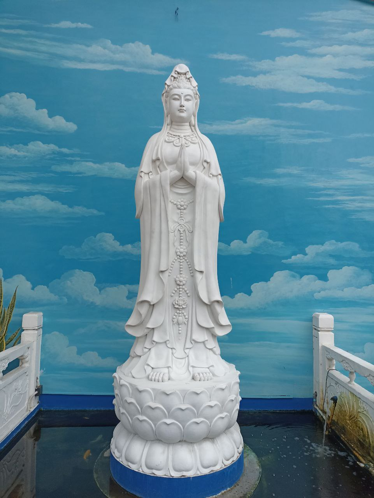
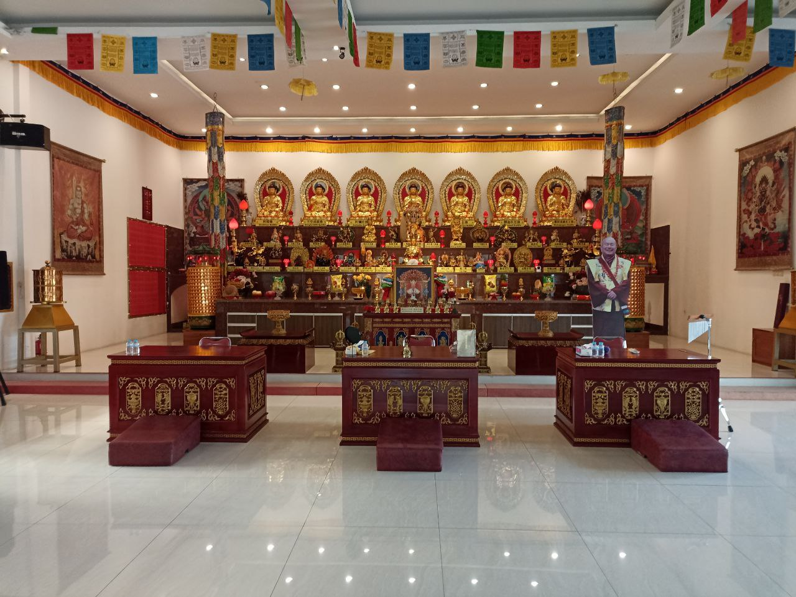
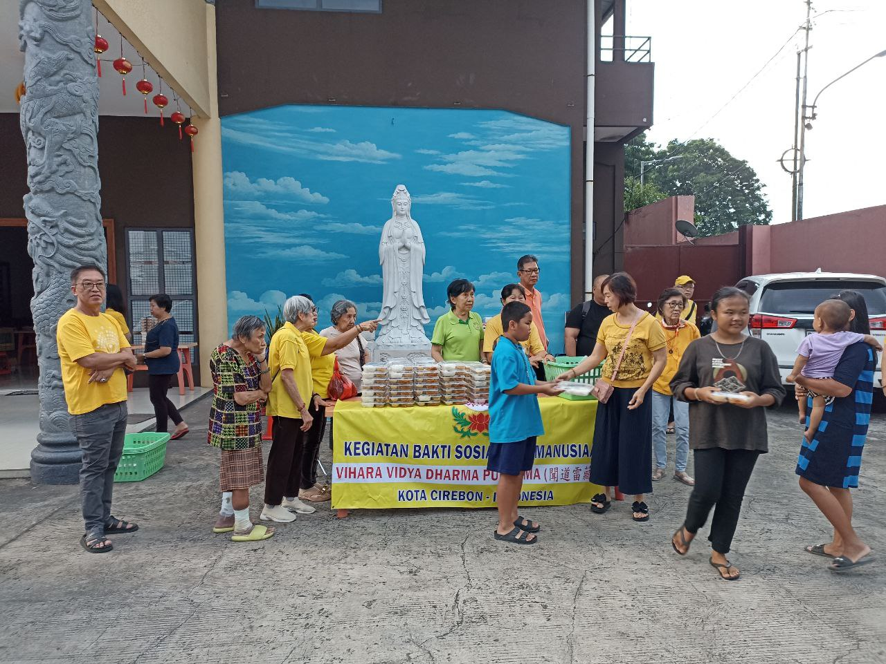
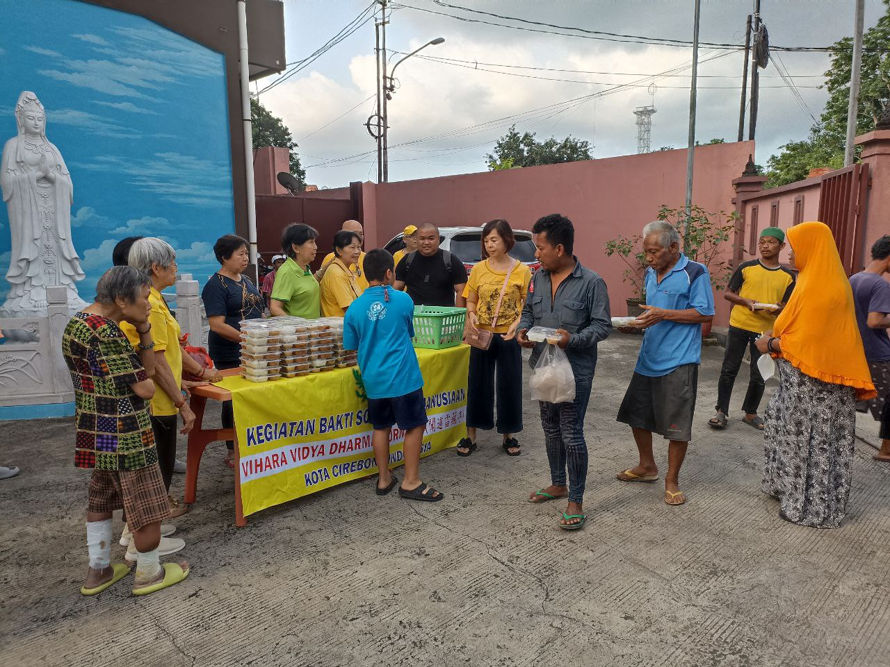
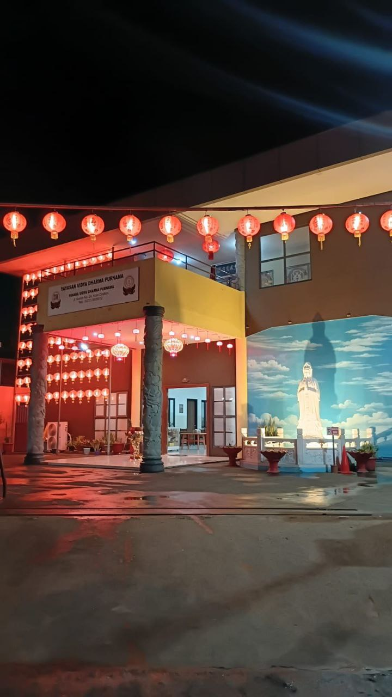
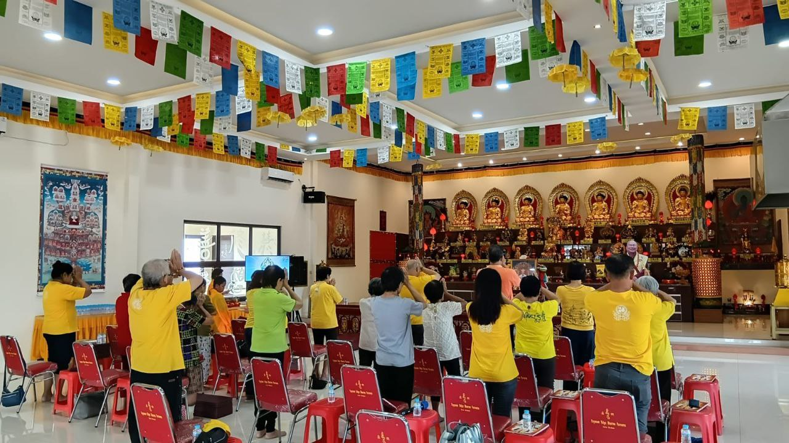

Vihara Vidya Dharma Purnama adalah vihara di Cirebon yang aktif dan terbuka untuk umum. Tempat ibadah umat Buddha di Cirebon ini menyelenggarakan kebaktian rutin, kegiatan spiritual, dan aktivitas sosial masyarakat.





🙏 Bantu kami berkembang dengan memberikan review di Google